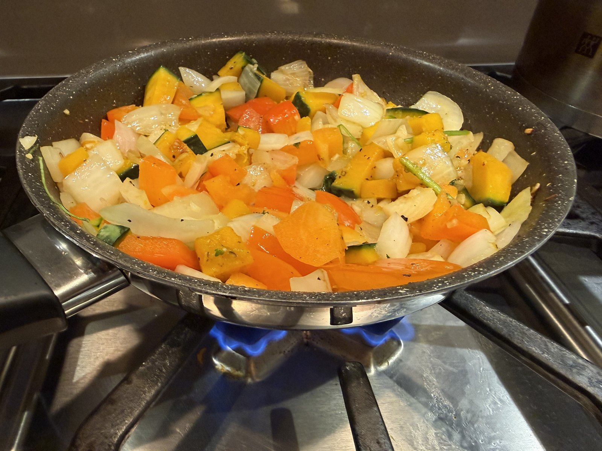
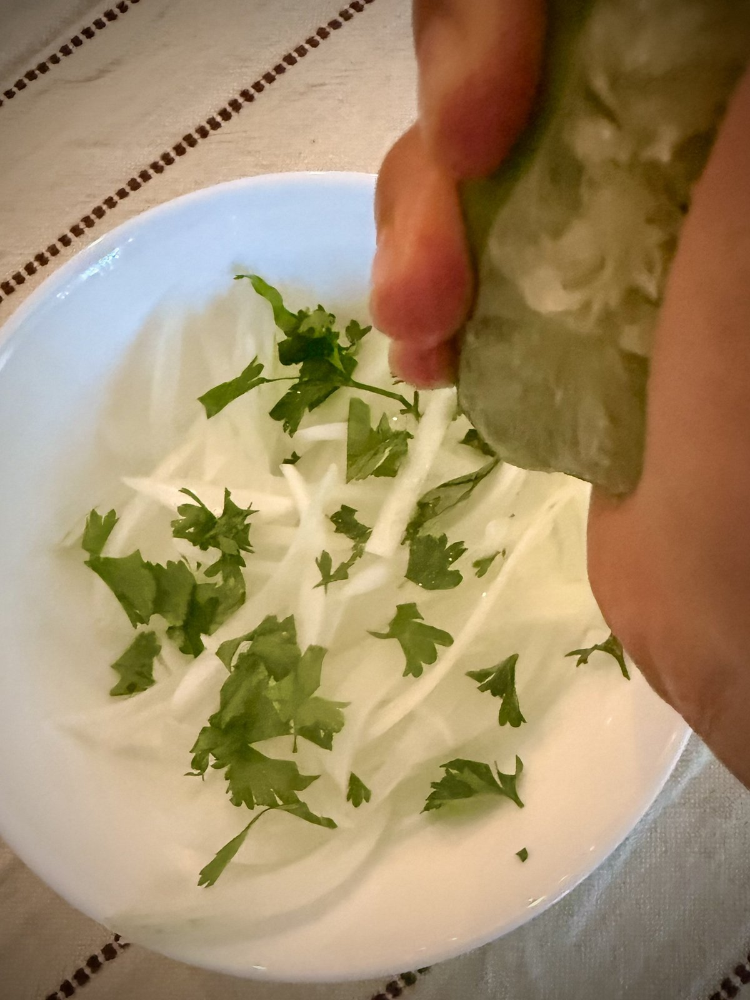

Arroz con Pato · Serves 4
The cilantro-green, beer-braised duck rice of northern Peru — fragrant, festive, and made for celebration
Serves 4 · Marinate overnight · Braise 45–60 min
Herbaceous and vivid from a mountain of fresh cilantro, with a gentle heat from ají amarillo and a subtle sweetness from loche squash. The rice soaks up the braising liquid and duck fat, so every grain is deeply savory. The braised duck pulls apart tender and juicy. The salsa criolla arrives crisp, bright, and citrusy — cutting right through the richness of the rest of the dish.

The aderezo vegetables cooking down — onion, bell pepper, ají amarillo, loche squash
On the 28th of July, Peruvian streets bustle with parades and music. Red and white fabrics flutter in the cool wind of the Plaza de Armas. Food carts send up smoke carrying the scent of anticucho, papas rellenas, and chicharrón, washed down with Ponche de los Libertadores. And on family tables across the country, there sits the fragrant, cilantro-green Arroz con Pato.
Las Fiestas Patrias del Perú — Peru's Independence Days — is plural, and deliberately so. July 28 marks the liberation from Spanish conquistadors in 1821; July 29 honors the Armed Forces and National Police. Two days of national pride, and plenty of time at the table.
Arroz con Pato is one of the great signature dishes of northern Peru, rooted in the farmlands around Chiclayo, north of Lima. The dish is an amalgamation of indigenous Moche culinary tradition, Spanish colonial ingredients, and the local herbs that grow in the coastal valleys. The earliest written reference to the dish dates to around 1860, though by the time of independence in 1821 it was already finding its way into accounts of French-style dinners that had adopted its distinctive seasoning. At that time, cooks still relied on the batán — a grinding stone — to blend the ingredients that would come to define it.
Like any truly beloved dish, it has evolved into as many versions as there are cooks. Northern versions often fold spinach and cilantro into the rice itself, giving the characteristic deep green color. Beer is a common addition to the braising liquid for depth; some cooks splash in pisco alongside it; highland versions dispense with beer entirely. The common thread is a dish that is deeply communal — slow, fragrant, and generous.
Its younger sibling, Arroz con Pollo (rice with chicken), borrows the same technique and spirit and has become popular far beyond Peru's borders — but the duck original remains the celebration dish.
Star ingredient — loche squash: Loche (Cucurbita moschata) is a small, knobby squash native to northern Peru with a dry, starchy flesh and a subtle sweetness that sets this dish apart from any similar duck-and-rice preparation elsewhere. It thickens the rice slightly, lends a gentle sweetness, and pairs with the green herbs in a way that is genuinely unlike anything else. Outside Peru it can be hard to source; butternut squash is the closest substitute, though the magic is slightly diminished.
My recipe is not strictly authentic — it's what I assembled from many hours reading Spanish-language recipes and translating them into something accessible for a home kitchen. I hope it opens a door into Peru and its festivities for you.

Salsa criolla — onion rinsed in cold water, then lime juice and cilantro
Arroz con Pato is a complete meal on its own, but a cold Peruvian beer — Cristal or Cusqueña — alongside it is entirely appropriate, given that beer goes into the pot anyway. A glass of chicha morada (purple corn drink) is the non-alcoholic Peruvian pairing of choice.
Serves 4. Measurements are guidelines — eyeball and adjust as you go.
The Duck & Marinade
The Cilantro Aderezo (Dressing)
The Rice
Salsa Criolla (side)
The Night Before — Marinate the Duck
The Next Day — Make the Cilantro Aderezo
Cook the Duck
Cook the Rice
Make the Salsa Criolla (While the Rice Cooks)
To Serve
Loche squash: If you can't find loche, butternut squash is the best substitute. Kabocha works too. Grate it directly into the marinade and aderezo.
Chicha de jora: This fermented corn beer adds a subtle tang and depth. If unavailable, just increase the dark beer. A splash of apple cider vinegar can approximate the fermented note.
Ají amarillo paste: Found in most Latin American grocery stores or online. The flavor is fruity and distinctively Peruvian — don't substitute with generic chili paste if you can help it.
Beer in the braise: Use a dark beer with some body — a stout or porter works beautifully. The bitterness mellows in the braise and adds real depth.
Rice ratio: This is the trickiest part. Go conservative with the broth — you can always add more, but you can't take it back. The rice should finish moist and green, not soupy.
Store leftovers in an airtight container and refrigerate immediately — do not let the rice sit at room temperature for long. Best eaten within 3 days.
To refresh: stir in a few spoonfuls of water before warming to bring the rice back to life. The duck reheats well with its reserved braising liquid.

Plated — green rice, braised duck, corn, and salsa criolla
Arroz con Pato is a dish that rewards patience. The overnight marinade, the slow braise, the careful ratio of broth to rice — it asks you to slow down, and in return it gives you something genuinely extraordinary. For me, cooking dishes like this is how I get closest to understanding a culture from the outside: standing at the stove, translating someone else's recipe, trying to understand what they loved about it.
¡Felices Fiestas Patrias!